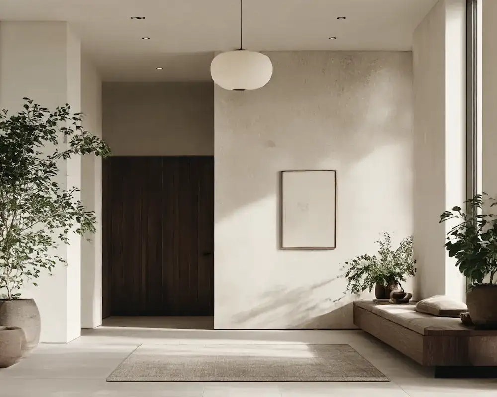
We are a multidisciplinary interior design studio dedicated to creating timeless interiors that enhance living spaces and inspire everyday experiences.
Latest works
Explore our latest interior design projects and transformative spaces.
See all projectsExplore now2025
Luxury Residential Complex
Downtown Metropolitan Area
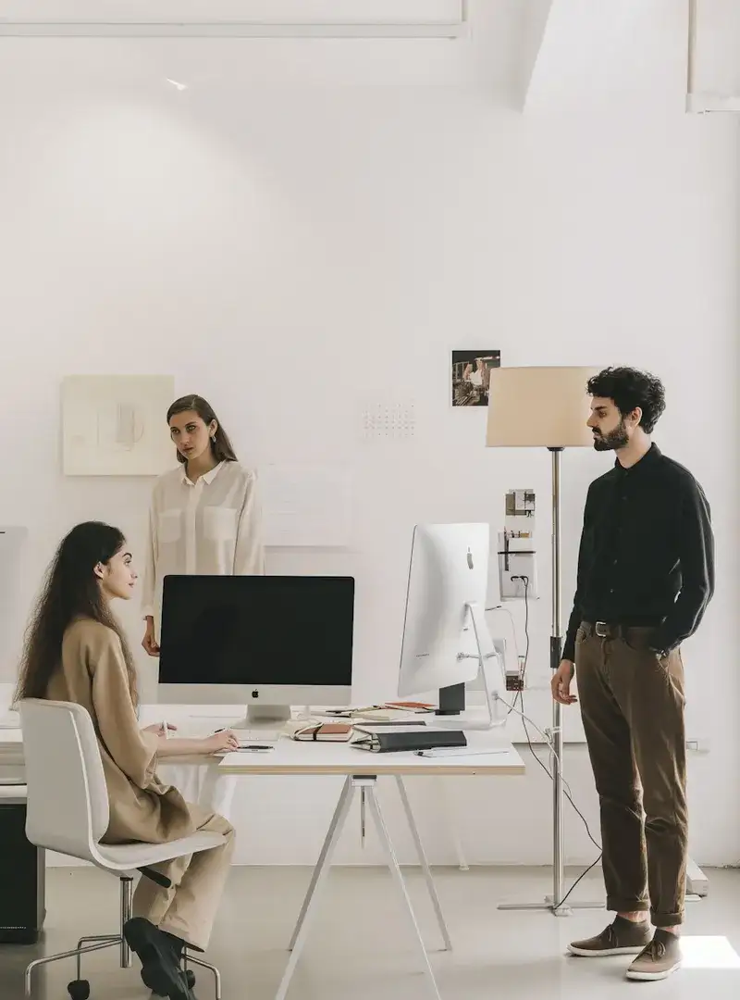
Purposeful in vision. Meticulous in craft. Bold in innovation.
At our core is a belief in creative intention. Every space, every material, every design choice — it all matters. Because in a world saturated with options, we believe thoughtful design wins. When you work with Sandstone, you’re not just hiring a designer — you’re gaining a partner who’s invested in your vision, your lifestyle, and your impact.
We’re not just interior designers — we’re thinkers, creators, and collaborators. Our team blends global trends with personal sensibility, crafting spaces that feel authentic yet inspiring. Whether it’s a home transformation, a commercial space, or a bespoke environment, our goal is always the same: to make your space feel truly yours.
500+
Over 500 interior design projects have been successfully completed, each one transforming spaces into beautiful, functional environments that reflect our clients' unique visions and lifestyles.
15+
With more than 15 years of experience in the interior design industry, we have honed our skills in creating timeless and modern spaces that stand the test of time.
200+
We have served over 200 happy clients, building lasting relationships through our commitment to quality, creativity, and exceptional design solutions tailored to their needs.
50+
Our work has been recognized with over 50 awards, celebrating our innovative approaches and outstanding contributions to the field of interior design excellence.
25+
Our dedicated team of over 25 talented designers, architects, and specialists brings diverse expertise and passion to every project, ensuring unparalleled craftsmanship and attention to detail.
1M+
More than 1 million square feet of spaces have been designed and transformed by our studio, from intimate homes to expansive commercial environments, all with a focus on sustainability and beauty.
98%
Achieving a 98% client satisfaction rate through our collaborative process, transparent communication, and commitment to exceeding expectations on every interior design endeavor.
At Sandstone, we believe great interior design creates environments that nurture and inspire. Our approach blends timeless principles with contemporary innovation, ensuring every space serves its inhabitants while telling a unique story.
The Process
A proven methodology that transforms visions into beautiful interiors through collaboration, creativity, and meticulous attention to detail.
01.
Discovery
Every project begins with discovery. We explore your vision, assess your space, and understand your lifestyle so we can create interiors that truly reflect your personality and needs.
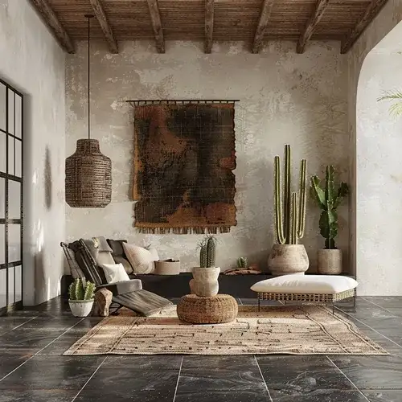
02.
Design Development
Design development drives the creative process. Our interior designers work closely with you through mood boards, material samples, and 3D visualizations to refine concepts with clarity and intention.
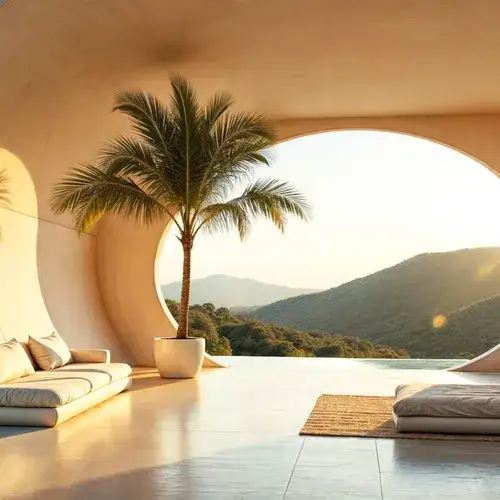
03.
Communication
Throughout the process, we maintain open communication and detailed planning. Regular check-ins, design presentations, and feedback sessions keep us aligned while allowing flexibility as your vision evolves.
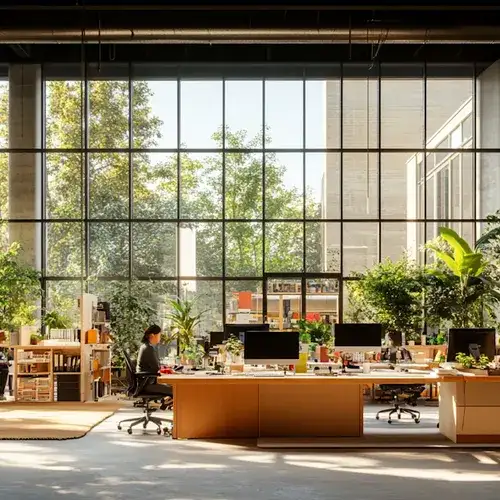
04.
Implementation
As we move from design to implementation, our focus shifts to execution and quality. Careful material sourcing, artisan coordination, and on-site supervision ensure the finished interior not only meets your expectations but creates a space you'll love for years to come.
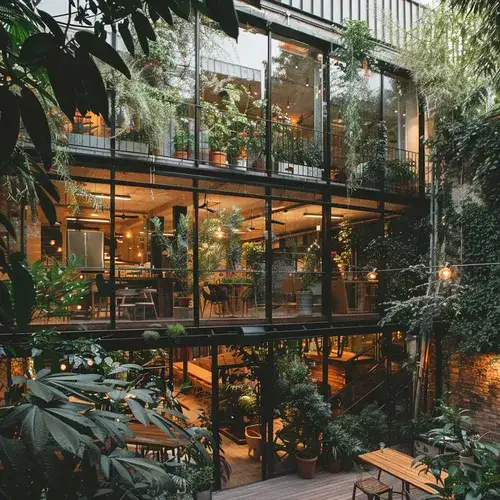
05.
Procurement
Procurement involves carefully selecting and acquiring all the materials, furniture, and finishes needed for your project. We work with trusted suppliers to ensure quality, sustainability, and timely delivery while staying within budget.
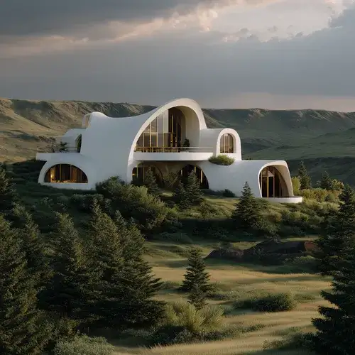
06.
Installation
During installation, our team oversees the careful placement and assembly of all elements. From furniture arrangement to lighting installation, we ensure every detail is executed flawlessly to bring your vision to life.
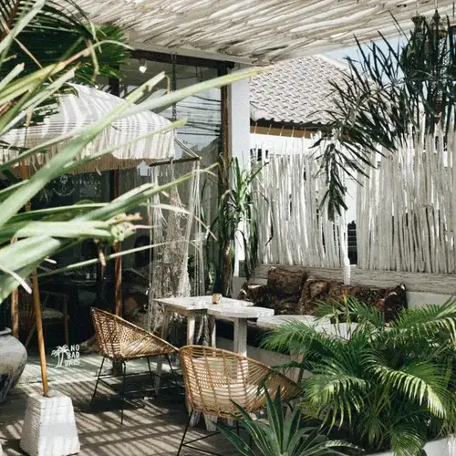
Real partner stories, brought to life through creativity, strategy,and brand experiences that stick.
Journal
Explore our latest articles and insights on design, technology, and creative innovation
See all articlesRead more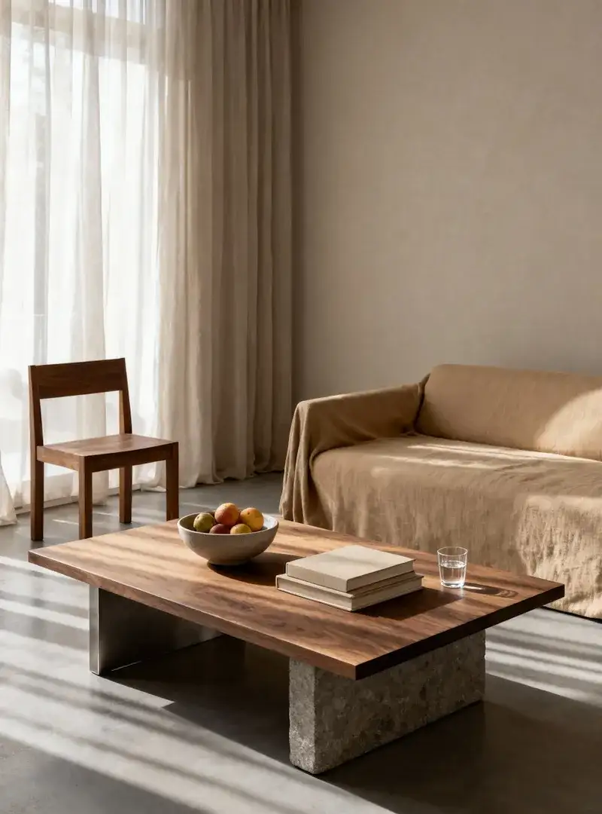
Human-Centered Architecture
How architects translate vision into space, blending context, materiality, and technology to shape environments that elevate daily life.
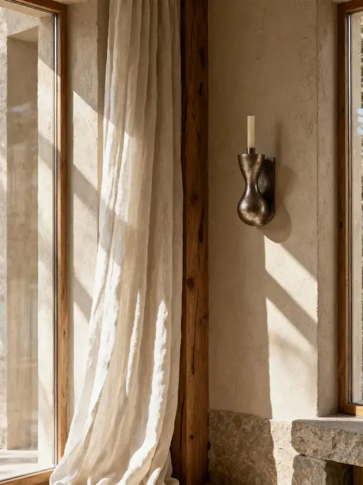
Breathing new life into existing structures
Strategies for transforming legacy buildings into high-performance spaces without erasing their character.
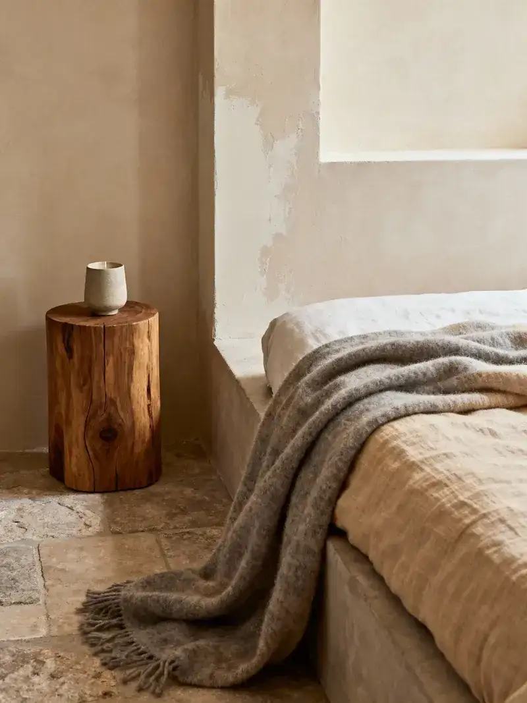
Architecture that supports well-being
Evidence-based design moves that help healthcare and workplace projects nurture calm, connection, and recovery.